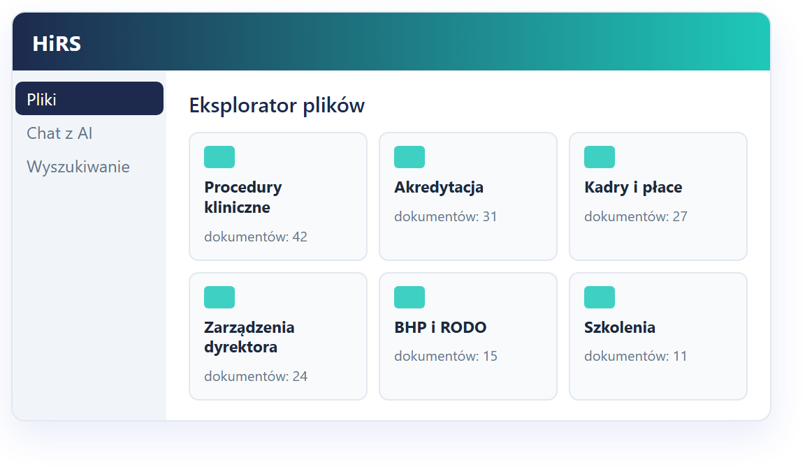

Pytasz jak człowieka.
Odpowiada z Waszych dokumentów.
HiRS — Hospital Information Retrieval System
Nic nie wychodzi poza szpital.
Pracownik pyta zwykłym zdaniem, a system odpowiada treścią z Waszych regulaminów i procedur — wskazując dokument i stronę, na której to sprawdzicie. Wszystko liczy się na urządzeniu w Waszej serwerowni.
Problem, który znają wszyscy
Wiedza jest w dokumentach.
Problemem jest droga do niej.
Nie wiadomo, która wersja obowiązuje
Dokument jest — tylko w którym folderze, i czy to na pewno aktualny tekst jednolity, a nie wersja sprzed dwóch aneksów?
Ta sama odpowiedź dziesiątki razy
Kadry i dział jakości tłumaczą w kółko to samo. Nowy pracownik pyta koleżankę, zamiast zajrzeć do regulaminu.
Przy akredytacji liczy się czas
Podczas kontroli i wizyty akredytacyjnej znaczenie ma to, jak szybko docieracie do właściwego zapisu — nie to, że gdzieś go macie.
Chmura odpada
Dokumentacja szpitala nie może trafiać do zewnętrznego dostawcy. To zwykle zamyka temat narzędzi działających w internecie.
Co dostajecie
Trzy drogi do dokumentu
Pracownik wybiera tę, która jest mu bliższa — nikogo nie zmuszamy do zmiany przyzwyczajeń.
- Repozytorium — foldery, uprawnienia, statusy przetwarzania
- Chat z AI — pytanie zwykłym językiem, odpowiedź z odnośnikami do stron
- Wyszukiwarka po polach — „zarządzenia z 2024”, „procedury zatwierdzone przez…”
- Automatyczne rozpoznawanie — rodzaj pisma, numer, data, osoba zatwierdzająca
- Instrukcja obsługi wbudowana w aplikację

Bezpieczeństwo i prywatność
Żaden dokument, fragment ani pytanie
nie opuszcza Waszej sieci
Wasza serwerownia
Brak połączenia z usługami zewnętrznymi — do internetu nie wychodzi żaden dokument, fragment ani pytanie.
- Dostęp do folderów nadawany rolom — użytkownik widzi tylko swoje, także w czacie
- Historia pytań prywatna; administrator widzi statystyki, nie cudze rozmowy
- Automatyczne wylogowanie po bezczynności, zmiana hasła za potwierdzeniem
Skąd pewność, że odpowiedź jest prawdziwa
Nie trzeba wierzyć systemowi —
każde zdanie sprawdzicie w źródle
- Odpowiedź powstaje wyłącznie z fragmentów Waszych plików
- Brak dopasowania = jasny komunikat zamiast wymyślonej treści
- Widać też, ile dokumentów sprawdzono i z których nie skorzystano
Pojemność i szybkość
Baza rośnie, czas odpowiedzi stoi w miejscu
Czasy pochodzą z pomiarów na działającym wdrożeniu. Przygotowanie nowego dokumentu trwa średnio ok. 60 sekund i odbywa się raz, w tle, przy wgraniu pliku. Pojemność ogranicza dysk, nie wydajność — urządzenie jest wielkości książki, a prądu pobiera tyle co stacja robocza.

Łatwość obsługi
Kto umie korzystać z wyszukiwarki internetowej, umie korzystać z tego
- Przeglądarka — nic do instalowania na komputerach pracowników
- Trzy ekrany: Dashboard, Pliki, Chat z AI. Administracja tylko dla administratora
- Pytanie potoczne działa: „delegacja” znajdzie „podróż służbową”, „L4” — „zwolnienie lekarskie”
- Wystarczy sama nazwa dokumentu, żeby dostać jego opis i odnośnik
- Szkolenie pracownika: 20 minut. Instrukcja w aplikacji, pod przyciskiem Pomoc
Gdzie to pracuje
Kolejny dział to wgranie dokumentów,
a nie nowe wdrożenie
Kadry
regulaminy, wnioski, PPK, ZFŚS
Jakość i akredytacja
procedury, instrukcje, wersje obowiązujące
Personel medyczny
procedury kliniczne i pielęgniarskie
Administracja
umowy, zarządzenia, przetargi
BHP · RODO · IT
polityki i instrukcje wewnętrzne
Poza szpitalem
uczelnie, urzędy, kancelarie, produkcja
Zaczynamy zwykle od kadr — tam pytania powtarzają się najczęściej, a efekt widać w pierwszym tygodniu.
Nasza rola
Przychodzimy z Waszymi dokumentami już w środku
- Nie zostawiamy pustego systemu — pierwsza partia dokumentów wgrana i sprawdzona przez nas
- Wzorce pod Wasze pisma — system sam wyciąga numer, datę i osobę zatwierdzającą
Warunki
Bez opłat za użytkownika i za liczbę dokumentów
| Pozycja | Netto |
|---|---|
| Sprzęt: NVIDIA DGX Spark — 128 GB pamięci, 4 TB SSD | 20 000 zł |
| Dostawa i wdrożenie oprogramowania | 25 000 zł |
| Wsparcie i rozwój | 1 000 zł / mies. |
| Rok pierwszy łącznie | 57 000 zł |
Sprzęt zostaje Wasz
Nie płacicie abonamentu za dostęp do własnych danych.
Bez opłat za użytkownika
Liczba kont i dokumentów nie zmienia ceny.
Trzy lata użytkowania
81 000 zł netto łącznie, razem ze wsparciem.
Zamów dostęp do demo
Zobaczcie to na własnych pytaniach
Pokazujemy działającą instancję z dokumentami przykładowymi — bez instalowania czegokolwiek u Was. Umawiamy pokaz w terminie, który Wam pasuje, i odpowiadamy na pytania techniczne. Kolejnym krokiem, jeśli zechcecie, jest dwutygodniowe uruchomienie próbne na Waszych dokumentach.
Zamów